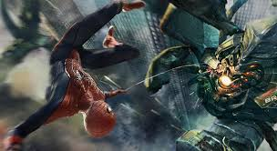

Resumen Película
El ex-científico de Oscorp, Richard Parker, graba un mensaje de vídeo para explicar su desaparición. Más tarde, él y su esposa Mary se hallan a bordo de un avión privado secuestrado por un hombre enviado para asesinar a Richard. Richard pelea contra el hombre, el hombre le dispara a Mary, trata de ahorcar a Richard y luego cae del avión hasta su muerte. El avión se estrella, muriendo tanto Richard como Mary, después de haber filmado el mencionado vídeo.
En el presente, Peter continúa luchando contra el crimen como Spider-Man, en una persecución detiene a Aleksei Sytsevich. Más tarde, Peter se reúne con Gwen en su ceremonia de graduación de la escuela secundaria, más tarde (insistiendo mantener la promesa que le hiciera al padre de ella) termina su relación en frente de un restaurante. El mejor amigo de Peter, Harry Osborn, regresa a Manhattan para ver a su padre Norman, director de Oscorp, que se encuentra con una enfermedad terminal y casi deforme. Norman explica que su enfermedad es genética, y Harry está en la edad en que empieza a desarrollarse. Norman le da a Harry un pequeño dispositivo que afirma contiene el trabajo de su vida, diciéndole que es el único legado que le dejará. Al día siguiente, Norman muere y Harry es nombrado nuevo director de Oscorp.

En un laboratorio de Oscorp, el ingeniero eléctrico Max Dillon, un científico brillante pero torpe, es a menudo humillado y sometido por sus superiores, especialmente por el Dr. Alistair Smythe que lo obligan a trabajar horas extra e incluso el día de su cumpleaños. Mientras trabajaba reparando una falla eléctrica, Max toca un cable de alta tensión eléctrica y sufre una brutal descarga que lo hace caer por accidente en un tanque de anguilas eléctricas de ingeniería genética. Lo atacan, y él increíblemente sobrevive, mutando y transformándose en un generador eléctrico viviente. Mientras tanto, Peter intenta mantener una amistad con Gwen, pero ella revela que quizás se mude a Inglaterra para cursar la universidad. Antes de que puedan hablar de ello, Dillon se adentra en Times Square, causando accidentalmente un apagón al absorber electricidad, y es detenido por Spider-Man después de una batalla en la que Dillon enfurece. Dillon es llevado al Instituto Ravencroft, donde es estudiado por el científico alemán, el Dr. Kafka, quien se sorprende al hablar con Dillon y ver el alcance de sus poderes.

Mientras tanto, los primeros síntomas de la enfermedad de Harry se comienzan a notar, y este utiliza el dispositivo que le dio su padre, descubriendo que la sangre del Hombre Araña podría salvarle la vida. Con el fin de llegar hasta el Hombre Araña para realizar una transfusión de su sangre, le pregunta a Peter quien le ha estado vendiendo fotos de Spider-Man para el Daily Bugle, pero Peter se niega a decírselo, sin saber qué efectos tendría la transfusión. Más tarde habla con Harry como Spider-Man, pero todavía se niega a la transfusión, lo que hace que Harry desarrolle un intenso odio hacia el Hombre Araña. Mientras tanto, los miembros del Consejo de Oscorp, y en particular, el vicepresidente, Donald Menken, le tiende una trampa a Harry para encubrir el accidente de Dillon, y lo destituyen como presidente de la compañía.
La asistente de Harry, Felicia Hardy, le informa de la existencia de un equipamiento que le podría ayudar, así que hace un trato con Dillon, que ahora se hace llamar "Electro", para traerlo de vuelta al interior del edificio Oscorp. Allí encuentra una armadura avanzada que tiene la capacidad de regenerar heridas graves y otro equipamiento de la casa de Norman, así como el veneno de las arañas genéticamente alteradas que se creía que estaba destruido. El veneno acelera la enfermedad de Harry y lo transforma en una criatura parecida a un duende, pero el protocolo de emergencia incorporado en el traje restaura su salud y, aparentemente, cura su enfermedad; sin embargo, los efectos del veneno hacen que Harry caiga en una completa demencia.
Peter usa la información dada por su padre para localizar el mensaje de vídeo en el laboratorio oculto de una estación de metro abandonada. Richard explica que tuvo que dejar Oscorp porque se negó a cooperar con los planes de fabricación de armamento biológico de Norman. Ahí, Peter se entera de que su padre usó su ADN para experimentar con las arañas genéticamente modificadas, y que los efectos del veneno no surtirán efectos positivos al 100% en nadie que no pertenezca a su linaje, por lo que Peter logra entender que de esa forma fue que obtuvo sus poderes. Peter entonces escucha un mensaje de voz de Gwen, diciéndole que le han concedido una beca británica y se dirige al aeropuerto antes de lo esperado. Antes de que despegue el avión, Peter llega hasta ella en el puente de Brooklyn y le declara su amor, prometiendo ir adonde quiera que ella vaya, y se ponen de acuerdo para ir juntos a Inglaterra.

Electro provoca otro apagón, y Peter se dispone a luchar contra él como Spider-Man. Gwen lo sigue, y juntos trazan un plan para restaurar la energía. En la batalla, utilizan a Electro para que él absorba su propia electricidad y provocarle una sobrecarga, que lo acaba matando. Después, Harry transformado como el Duende Verde, llega equipado con la armadura y el armamento de su padre; y al ver a Gwen, deduce la identidad secreta de Spider-Man y, jurando venganza por haber rechazado la transfusión de sangre, Harry secuestra a Gwen hasta llevarla a la cima de la torre del reloj. Peter intenta persuadirlo de no lastimar a Gwen. Acto seguido, Harry la lanza al vacío, y rápidamente Peter la atrapa e intenta ponerla a salvo. Se inicia una feroz lucha entre Peter y Harry, este último tomando ventaja de que Peter intenta mantener a salvo a Gwen de los ataques de Harry. Peter logra tomar ventaja golpeando a Harry y lo deja inconsciente. Sin embargo, durante la lucha la telaraña que sostiene a Gwen se parte haciéndola caer al vacío, Peter intenta desesperadamente salvarla lanzando una vez más su red de araña hacia ella, logrando sujetarla, pero es demasiado tarde. Gwen se golpea contra el suelo, muriendo instantáneamente. Peter intenta reanimarla, y rompe en llanto al darse cuenta de que ha muerto.
Días más tarde, Peter está sumido en la depresión por no cumplir la promesa del padre de Gwen de protegerla, decide terminar su carrera como Spider-Man y no para de visitar la tumba de Gwen todos los días, triste por haber perdido al amor de su vida. Cinco meses después, Harry hace frente a las secuelas de su transformación durante su encarcelamiento en Ravencroft. Su asociado, Gustav Fiers, visita a Harry y el par discute la formación de su propio equipo con el fin de llevar a cabo sus propios fines. Harry ordena a Fiers comenzar con Aleksei Sytsevich, y Fiers hace que Sytsevich escape de la Bóveda. Equipado con una poderosa armadura robótica, Sytsevich se llama a sí mismo Rhino y provoca destrozos y alboroto por las calles. Los policías no parecían detenerlo con sus disparos, cuando Jorge (un amigo de Peter, a quien conoció mientras lo defendía de unos bullys) vestido con un disfraz de Spider-Man se mete a una lucha desigual contra Rhino. Sorpresivamente, aparece Peter de nuevo como Spider-Man para agradecerle por ser valiente y mantener a Rhino ocupado, quien ve con alegría como su héroe regresó a la acción, y así Peter inspirado por el discurso de graduación de Gwen, retoma su carrera como Spider-Man y se enfrenta a Rhino sin echarse para atrás.
